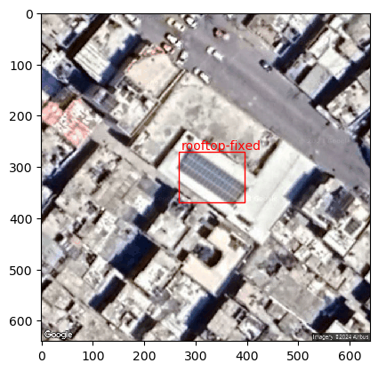

Run a system through the Panel-Segmentation detection pipeline#
from panel_segmentation import panel_detection as pseg
import numpy as np
from tensorflow.keras.preprocessing import image as imagex
import matplotlib.pyplot as plt
import os
Use a set of latitude-longitude coordinates for an NREL site.
#Example latitude-longitude coordinates to run the analysis on.
# latitude = 39.7407
# longitude = -105.1694
latitude = 31.533796
longitude = 34.499092
google_maps_api_key = "<GOOGLE_TOKEN>"
file_name_save = "./panel_segmentation/examples/Panel_Detection_Examples/sat_img_ex.png"
Create an instance of the PanelDetection class and generate a satellite image of the site at the lat-long coordinates.
#CREATE AN INSTANCE OF THE PANELDETECTION CLASS TO RUN THE ANALYSIS
panelseg = pseg.PanelDetection()
#GENERATE A SATELLITE IMAGE USING THE ASSOCIATED LAT-LONG COORDS AND THE GOOGLE
#MAPS API KEY
img = panelseg.generateSatelliteImage(latitude, longitude,
file_name_save,
google_maps_api_key)
#Show the generated satellite image
plt.imshow(img)
Load in the image and declare it as a numpy array.
x = imagex.load_img("./panel_segmentation/examples/Panel_Detection_Examples/sat_img_ex.png",
color_mode='rgb',
target_size=(640,640))
plt.imshow(x)
x = np.array(x)

Use the classifier model to confirm if there are solar arrays detected in the satellite image.
panel_loc = panelseg.hasPanels(x)
print(panel_loc)
True
Classify the image by mounting configuration, using the mounting configuration object detection algorithm.
(scores, labels, boxes) = panelseg.classifyMountingConfiguration(image_file_path = "./panel_segmentation/examples/Panel_Detection_Examples/sat_img_ex.png",
acc_cutoff = .65)

First, mask the satellite image, and then crop out the panels.
import cv2
import tensorflow as tf
image = cv2.imread(file_name_save)
t_boxes = boxes.numpy().astype(int)
mask = np.zeros((image.shape[0], image.shape[1]), dtype=np.uint8)
for box in t_boxes:
print(box)
x_min, y_min, x_max, y_max = box
if (x_min > 20):
x_min = x_min - 20
else:
x_min = 0
if (y_min > 20):
y_min = y_min - 20
else:
y_min = 0
if (x_max < image.shape[0]-20):
x_max = x_max + 20
else:
x_max = image.shape[0]-1
if (y_max < image.shape[1]-20):
y_max = y_max + 20
else:
y_max = image.shape[1]-1
print(x_min, x_max)
print(y_min, y_max)
mask[y_min:y_max, x_min:x_max] = 255
masked_img = cv2.bitwise_and(image,image,mask=mask)
# gray_img = cv2.cvtColor(masked_img, cv2.COLOR_BGR2GRAY)
plt.imshow(masked_img)
[266 270 394 369]
246 414
250 389
<matplotlib.image.AxesImage at 0x1e587c3da60>
hsv = cv2.cvtColor(masked_img, cv2.COLOR_BGR2HSV)
lower_color = np.array([80,0,80])
upper_color = np.array([150,150,200])
hsv_mask = cv2.inRange(hsv, lower_color, upper_color)
# Bitwise-and the mask with the original image
segmented = cv2.bitwise_and(masked_img, masked_img, mask=hsv_mask)
plt.imshow(segmented)
<matplotlib.image.AxesImage at 0x1e586e38b80>
# Find contours in the mask
contours, _ = cv2.findContours(hsv_mask, cv2.RETR_EXTERNAL, cv2.CHAIN_APPROX_SIMPLE)
# Find the largest contour
largest_contour = max(contours, key = cv2.contourArea)
# Approximation accuracy
epsilon = 0.01 * cv2.arcLength(largest_contour, True)
# Approximate the contour to a polygon
approx = cv2.approxPolyDP(largest_contour, epsilon, True)
# Draw the approximated polygon onto the original image
cv2.drawContours(image, [approx], -1, (0, 255, 0), 3)
# Display the original image with the largest contour
plt.imshow(image)
<matplotlib.image.AxesImage at 0x1e586e8d580>
cv2.contourArea(approx)
5753.5